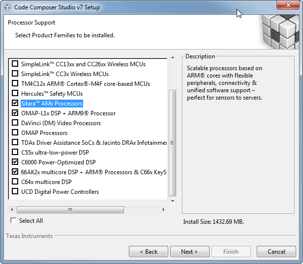
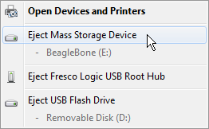
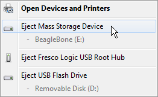
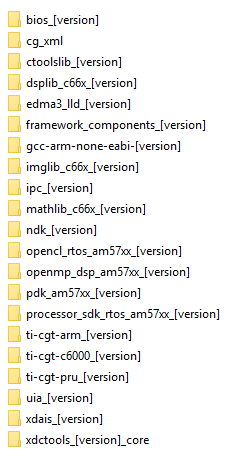
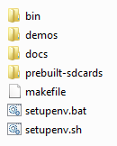

1.1. Processor SDK RTOS Getting Started Guide¶
1.1.1. Overview¶
The Processor Software Development Kit (Processor-SDK) provides the core foundation and building blocks that facilitate application software development on TI’s embedded processors. This Getting Started Guide focuses on the Real-Time Operating System (RTOS) and provides information on acquiring the software and running basic examples/demonstrations bundled in the SDK.
For anyone that is new to Processor-SDK RTOS, traversing through all the resources we provide in the right order is important. Here is a sequence to follow that introduces the SDK structure and gets you started with writing applications using the SDK.
1.1.2. Introduction to Processor SDK RTOS¶
First, start with watching introductory Processor SDK training videos that are relevant to RTOS:
ID |
Name |
Description |
|---|---|---|
1.2 |
This module is the first installment of a two-part overview of the Processor SDK from the TI-RTOS perspective. It introduces the functional elements that may be included in the installation for an SoC, and then looks at these elements in more detail: TI-RTOS kernel, Inter-Processor Communication (IPC), Network Developer’s Kit (NDK), algorithm libraries, and diagnostic software. |
|
1.3 |
This module is the second installment of a two-part overview of the Processor SDK from the TI-RTOS perspective. It examines the functional elements that may be included in the installation for an SoC: Low-level Drivers (LLD), Chip Support Library (CSL), OS Abstraction Layer (OSAL), board library, Secondary Boot Loader (SBL), and board diagnostics. |
After going through these videos, you will have a good understanding of
how the software is organized for portability across platforms
software API hierarchy within a platform, from chip support to low-level driver to middleware
where to customize software for different use cases
1.1.3. Basic examples¶
Next, it is beneficial to start with executing simple examples.
Since we want to do this on the actual hardware target, you will need Code Composer Studio (CCS) and an Evaluation Module (EVM). See sections below for information to configure CCS and EVM for development. This is a top-level starting point, but you may need to go to your specific EVM hardware setup guide for some steps (e.g., connecting external JTAG). A cross reference to all hardware users guide can be found on the Supported Platforms page.
1.1.3.1. “Hello World” example with no operating system¶
The simplest example that you can write is a “Hello World” example that runs in bare metal or no operating system. CCS comes with templates of a semi-hosted program for the different device and core. Using this template allows standard output to be displayed on the host PC using the debugger. This is a good way to start learning basic configurations such as the memory map of your device. Specific instructions for each platform bundled in the Processor SDK RTOS can be found at Processor SDK Bare-Metal Examples
1.1.3.2. Simple examples with an operating system¶
The next level of complexity is the take that same “Hello World” example and run it over the TI-RTOS kernel. Besides a template for the simple four-line “Hello World” example, CCS comes with templates for other features of the kernel such as clock, error, event, log, SWI, and task. You will also learn how to configure the TI-RTOS kernel for such things as enabling semi-host support. Specific instructions for each platform bundled in the Processor SDK RTOS can be found at Processor SDK RTOS Examples
1.1.4. Advanced examples¶
Next, you can get familiar with peripheral drivers.
1.1.4.1. Peripheral driver example¶
The next level of complexity is to start using peripherals of your device. There are low-level driver examples that are provided in the Processor SDK RTOS package. These are CCS projects that can be used to test an individual peripheral. Some of the examples use multiple low level drivers; for example, the GPIO example will use I2C driver for reading EVM board ID to auto configure the software and UART driver to display status messages.
For simplicity and flexibility, the CCS project information are captured in configuration files that you can use to generate CCS projects for your platform, EVM, endian, and core. Once CCS projects are created, they are loaded and run on the EVM via JTAG. Instructions to create and run the CCS projects can be found at Rebuilding The PDK
1.1.5. Application development¶
We now take the leap to put together parts of the SDK and create a more complex application.
1.1.5.1. Template Application Workshop¶
Take a look at the workshop for the RTOS/Bare-metal Template Application. This workshop will cover the basics of navigating the SDK and its documentation and using CCS. The Template Application is a good starting point to learn how to use drivers, the OSAL layer, and Board Library. It pulls portions of the SDK software into one application which can serve as the starting point for creating your first application.
Note
The template application currently supports Sitara EVMs (AM335x EVM, AM437x EVM, AM572x EVM, and AM654x EVM) only.
1.1.5.2. Demonstrations in Processor SDK RTOS¶
Start with running the demonstrations that are part of Processor SDK RTOS package. These demonstrations can be run “out of box” since pre-build binaries are provided, but also contain source to that you can set breakpoints and step through the code. The demonstrations contain a richer set of software and perform more complex features such as audio and graphics.
Not all demonstrations are applicable to all platforms. The following page has a list of all demonstrations and supported platform: Processor SDK_RTOS Examples and Demonstrations
1.1.5.3. Custom application¶
Next, watch the following training video on guidelines to write a custom application using the SDK.
ID |
Name |
Description |
|---|---|---|
1.4 |
Application Development Using Processor SDK RTOS (1 hr 40 min) |
This presentation provides a detailed overview of the application development process using the Processor SDK RTOS release. It walks through each step of the a typical development flow, including setup of the evaluation module (EVM), getting started with the EVM, running out-of-box examples, developing application code, porting applications to custom hardware, and customization of application software. |
This video has a lot of content, as you can see from the duration. It is broken down into the following sections:
Setup development environment including download software, configure target EVM
Start with basic software examples and basic connectivity of EVM
Run demo applications provided in SDK
Develop application using drivers in SDK
Port software to custom hardware by changing the board support package
Customize application for certain use cases
If you have custom hardware, the SDK software is organized to ease porting to a new hardware. All EVM-specific software is kept in the board support package, Board Library. Functions include unlocking MMR registers, initializing PLL, configuring clock, configuring PinMux, initialing DDR, and creating a UART instance for console output. Individual examples, unit tests, and demonstrations call the Board Library so that each of these applications can be migrated to a custom hardware by modifying the Board Library. You may want to also port the EVM diagnostics to your custom hardware and ensure the test suite passes.
The customize module provides information to create a new application. This includes configuring TI-RTOS kernel to link required driver libraries, memory map, RTSC platform definition, and task creation.
1.1.6. Download and install software¶
There are three software packages that make up the Processor SDK RTOS development ecosystem:
Code Composer Studio (if using JTAG, IDE)
Latest CCS Emulation package (for connecting to target using JTAG)
Processor-SDK RTOS software
See the Release Notes for information on minimum requirements for host PC.
The size of the installer is large since we want to provide one bundle for all the components. The bad side of this is that if you are manually downloading the Processor-SDK installer, you may run into issues such as download stall or slow download. One simple solution is to run a download manager/accelerator such as http://www.freedownloadmanager.org/.
1.1.6.1. Code Composer Studio¶

The Processor-SDK RTOS uses Code Composer Studio as the host integrated development environment for development and debug. All compilers are packaged with the SDK installer. This allows compilation of software without needing to install CCS. You only need CCS if you are using CCS projects, using JTAG to communicate with target, or need an Integrated Development Environment (IDE) for development and debug.
To download CCS, use the installer specified on the Processor-SDK download page for your platform (see links in below section).
Attention
See the Release Notes for the recommended version of CCS. This is the version that was validated with the software in the SDK and will provide the best user experience. Occasionally, there may be compatibility issues if different versions are used.
When installing CCS, you can choose to control what is installed for processor architecture.
The minimum required for the SDK are the following items
Sitara AMx Processors for AM335x, AM437x, AM57x
66AK2x multicore DSP + ARM Processors & C66x KeyStone multicore DSP for K2E, K2G, K2H, K2K, K2L, C665x, C667x
OMAP-L1x DSP + ARM9 Processor for OMAP-L1x
C6000 Power-Optimized DSP for C674x
Note
If you plan to use emulators other than the XDS100 class or XDS200 class of emulators, please select the appropriate emulation drivers at the time of install. Code composer studio does not allow upgrades on drivers that were not installed during the first install.
1.1.6.2. Emulator support¶
The support for connecting a JTAG to the EVM to debug software is included in the CCS package. In some cases, additional modifications to configuration GEL files are provided separately. To get the latest version, perform a CCS Check for Updates.
The relevant update will be named
Sitara Device Support for AM335x, AM437x, AM57x
Keystone2 Device Support for K2E, K2G, K2H, K2K, K2L
Keystone1 Device Support for C665x, C667x
OMAPL/Integra Device Support for OMAP-L1x
C6000 Device Support for C674x
For example, an update for Sitara devices will look like:

1.1.6.3. Processor-SDK for RTOS¶
The final step is to download and install the Processor-SDK RTOS. See the software product page for your device to get the latest version of this software:
From the appropriate software product page, go to the download page by clicking “Get Software” for the RTOS package.
Note
To avoid configuring CCS “Tool Discovery Path” to search for components in different directories, it is recommended to install the SDK in the same directory as CCS. This is C:/TI for Windows and /home/[user]/ti for Linux.
Once installer has started, the Cancel button may not work properly.
On Ubuntu 14.04 Linux Host, if you are installing Processor SDK RTOS and observe that the installer exits immediately after you try to run from command line then you need resolve dependencies using instructions provided here Processor SDK RTOS_Release Notes
1.1.7. Setup EVM hardware¶
Attention
The EVM board is sensitive to electrostatic discharges (ESD). Use a grounding strap or other device to prevent damaging the board. Be sure to connect communication cables before applying power to any equipment.
The EVM provides the ability to utilize a variety of capabilities of the SoC. Follow instructions in the included EVM Quick Start Guide for information on hardware configuration and other pertinent information. This guide is included in the EVM kit and also available for download from the software download page for your particular device. The list of supported EVMs are provided in the Release Notes
If you connect to the EVM UART, use the following host configuration:
Baud Rate: 115200
Data Bits: 8
Parity: None
Flow Control: Off
For more information beyond what is covered in the EVM Quick Start Guide, see EVM Hardware User Guides
1.1.8. Setting up CCS for EVM and Processor-SDK RTOS¶
After the Processor SDK is installed, launch Code Composer Studio and make sure that the components inside Processor SDK are discovered by the CCS eclipse environment. If you installed the SDK in the same directory as CCS, this is as simple as starting CCS and it will auto-detect the newly installed components.
Note
If you installed the SDK and CCS in different paths, see the Custom Installation Path How To page that provides instructions to configure for a custom installation path.
The next step is to make a connection between CCS and your EVM (or target). If you need help with this step, see the Setup CCS How To page explaining this further.
At this point, you should be able to connect to target using CCS and start development!
1.1.9. Useful links¶
Developer Guide
Note
This is a good landing page to bookmark since all links below can be found in the Developer Guide.
1.1.11. Windows SD Card Creation Guide¶
1.1.11.1. Overview¶
This page details how to use an image file to create a bootable SD card for the Processor SDK RTOS for AM3/AM4/AM5/K2G. This is only required one time. After that, you can use Windows to delete the SD card contents and replace it with whatever you would like to boot.
The contents of an bootable RTOS application will contain two files on the SD card:
app - Application image
MLO - Boot loader image
Tip
If you have the SD card that came in the EVM kit, you can skip the following steps to create a bootable SD card and simply copy your SD card image files directly to the SD card.
1.1.11.2. What is Needed¶
Access to a Windows PC
A valid Processor SDK RTOS for the appropriate processor installed (AM335x, AM437x, AM57xx, K2G)
Software to write an image file to a SD card
A SD card appropriate for the required hardware platform, must be 1GB or larger
A SD card reader/writer
1.1.11.3. Steps to Follow¶
Here is the process to follow to create the SD card.
1.1.11.3.1. Create a bootable SD image file¶
For example purposes, you can use the one that is bundled in the SDK. The file is located in
[SDK Install Path]\processor_sdk_rtos_<platform>_<version>\prebuilt-sdcards\<evm>\sd_card_img\
For example, the default location of the image file for the GP AM57x EVM
is
C:\processor_sdk_rtos_am57xx_2_00_00_00\prebuilt-sdcards\evmAM572x\sd_card_img\sd_card.img.gz.
To save installer space, this file is compressed. Once uncompressed, the
file name will be boot.img.
Download a disk imager program to write the image file to the SD card
The open source Win32 Disk Imager is a good option.
Note
This application needs to be installed with Administrative privilages.
1.1.11.3.2. Use the software for writing an image to disk to write the .img file to the SD card¶
Plug the SD card into the SD card reader/writer.
Insert the SD card reader/writer into the PC.
Launch the disk writer software. In the screenshots below, we are using Win32 Disk Imager.

Choose the image file for the SDK that you want to write.
Choose the SD card as the “Device”.
Write the image to the SD card by click “Write”. You will likely get the below confirmation box. This command will overwrite whatever disk you point it to, please make sure and choose the correct disk.

You should see the following status bar as the image is being written to the disk:

When the write is complete, you will get the following notification:

You can now close the image writing program by click “Exit”.
1.1.11.3.2.1. Limitations to the WinDisk32 SD card utility and alternate options¶
The WinDisk32 utility described in the sections above is used to format the SD card to FAT format and copy an 1GB SD card image to the SD card. While, this utility formats the SD card in FAT format recognized by all the ROM bootloader supported on Sitara and K2G devices, it limits the storage capacity of larger volume SD cards to 1 GB volume. The utility is designed to update the SD card volume information to match the size of the image copied to its volume. This can result in large portion of the volume being unused on the SD cards. You can restore the volume on the SD card using linux based SD formatting utilities. This section describes some options to the WinDisk32 utility that we have tested with the ROM bootloader on devices supported in Processor SDK.
SDcard.org Formatter Utility
K2G and AM437x users, can use the formatting utility provided by SDCard.org for booting an SD card on TI evaluation platforms. This utility formats the SD cards in a way by which it retains the original size and also in a format recognized by the ROM bootloader.
Note
This utility is not compatible with AM335x and AM57xx devices due the FAT format restrictions in the ROM bootloader on those devices.
You can follow the instructions provide below:
Download SD Card Formatter 4.0 for SD/SDHC/SDXC from the internet.
Insert the SD card into a USB based or similar SD card reader/writer on the host Windows system.
Run the SD Card Formatter 4.0 for SD/SDHC/SDXC Portable executable. The executable should automatically detect the SD card plugged via reader as a new ‘removable disk’ and populate the drive corresponding to the removable disk. Else you will need to manually point it to the new disk.

Choose default settings (as shown above)if it is new SD card and Click on ‘Format’. For previously used SD cards, you can choose “FULL” by clicking on Options menu to erase and format the SD card.
You should see a pop up window that indicates progress of the formatting tool. The Quick format option usually takes a few seconds. The following message will be displayed when the formatting is completed.
Copy the MLO (boot loader) to the formatted SD Card.
Rename application boot binary as “app” and copy it to SD Card.
You can now insert the SD card in the TI evaluation platform and boot the platform in SD boot.
Note
Bootmode switches are set for MMC/SD boot. See the Hardware User’s Guide for the evaluation platform for details.
HP USB Disk Storage Format Tool v2.0.6 (works with AM335x and AM437x devices)
For AM335x and AM437x users, you can opt to use HP USB Disk Storage Format Tool v2.0.6. This allows users to format the SD cards without modifying its volume and also uses a FAT32 format that is recognized by the ROM bootloader. However this utility may use FAT12 format for smaller volume(<4GB) SD cards.
You can follow the instructions provide below:
Download HP USB Disk Storage Format Tool v2.0.6 Portable from the internet.
Choose a SD card and a USB based or similar SD card reader/writer. Plug it to a Windows host system.
Run the HP USB Disk Storage Format Tool v2.0.6 Portable executable. The executable should automatically detect the SD card plugged via reader as a new ‘removable disk’. Else point it to the new disk.
Choose FAT32 if the SD card size is greater that 4GB. Else FAT should be good to go.
Click “Format.”
Copy the MLO (boot loader) to the formatted SD Card.
Rename application binary as “app” and copy it to SD Card.
Make sure that TI evaluation platform bootmode switches are set for MMC/SD boot. See the Hardware User’s Guide for the evaluation platform for details.
Attach the SD card to IDK MMC/SD Card slot and switch on TI evaluation platform.
Use the SD card creation script on Linux platform (works with all platforms)
This method works with all the platforms. However, this method requires the PDK installation on Linux and using the SD card creation script provided in the installer. Please refer to the Linux SD Card Creation Guide for details.
Safely eject the SD card from the computer
 


Note
Once SD card is made bootable with Win32 disk imager, it contains sample “MLO” and “app” which can be used on the target platform.
1.1.11.4. Boot from SD Card¶
To boot from SD card, simply plug in the SD card to the EVM and power on the board. If you used the examples provided in the Processor SDK RTOS installer, you will see
AM335x/AM437x:

AM57x:

1.1.12. Linux SD Card Creation Guide¶
1.1.12.1. Overview¶
The Processor SDK RTOS for AM3/AM4/AM5/K2G includes a script in the directory
[SDK Install Path]\processor_sdk_rtos_<platform>_<version>\bin\
named create-sdcard.sh. The purpose of this script is to create SD cards to load with images for RTOS applications.
The contents of an bootable RTOS application will contain two files on the SD card:
app - Application image
MLO - Boot loader image
The script will give you information about each step, but the following sections will go over the details and walk you through how to use the script as well.
1.1.12.2. What is Needed¶
Access to a Linux PC
A valid Processor SDK RTOS for the appropriate processor installed (AM335x, AM437x, AM57xx, K2G)
A SD card appropriate for the required hardware platform, must be 1GB or larger
A SD card reader/writer
1.1.12.3. Creating an SD card¶
1.1.12.3.1. Invoking the Script¶
The create-sdcard.sh script can be run from any location but must be
run with root permissions. This usually means using the sudo
command to start execution of the script. For example:
sudo [SDK INSTALL DIR]/bin/create-sdcard.sh [path/to/sdcard/files]
The SDK comes with pre-built images that can be directly loaded on an SD card without having to do any builds. These are typically a demonstration or a Power-On Self Test (POST) application. The path for these files are:
sudo [SDK INSTALL DIR]/bin/create-sdcard.sh [SDK INSTALL DIR]/prebuilt-sdcards/[EVM DIR]/sd_card_files/
If you fail to execute the script with root permissions you will receive a message that root permissions are required and the script will exit.
1.1.12.3.2. Select the SD Card Device¶
The first step of the script will ask you to select the drive representing the SD card that you want to format. In most cases your host root file system drive has been masked off to prevent damage to the host system. When prompted enter the device number corresponding to the SD card. For example, if the output looks like:
Availible Drives to write images to:
# major minor size name
1: 8 16 7761920 sdb
Enter Device Number:
You would enter 1 to select the sdb device.
For most common installations, this script works fine. However, if you
are using more advanced disk slicing and volume management, the
presented list of device nodes are off by one; in the best case (picking
the last item) it will flag a range error, and in the worst case
(anything in the middle) the wrong DASD can be destroyed. The problem
originates when it attempts to determine the $ROOTDRIVE to “mask”
the volume where “/” is mounted from the selection list using a
grep -v $ROOTDRIVE.
For the naive partitioning case, its heuristic is fine, yielding something like “sda” — but for LVM, it grabs some chunk of the device name, e.g. “mapp” (out of “/dev/mapper/kubuntu–vg-root on / type …”).
Partition and Format the SD Card
Any partitions of the device that are already mounted will be un-mounted so that the device is ready for partitioning. The SD Card will then be partitioned and formatted into FAT32.
1.1.12.3.3. Installing SD Card Contents¶
After the SD card is partitioned and formatted, the files under the path/to/sdcard/files will be installed onto the SD card, then safely exit the script.
Tip
Once SD card is made bootable, it contains sample “MLO” and “app” which can be used on the target platform.
1.1.12.4. Load Default Images to SD Card¶
The purpose of this section is to cover how to use the create-sdcard.sh script to populate an SD card that can be used to boot the device using the default images that ship with the Processor SDK for RTOS.
For example purposes, you can use the one that is bundled in the SDK. The file is located in
[SDK Install Path]/processor_sdk_rtos_<platform>_<version>/prebuilt-sdcards/<evm>/sd_card_files/
For example, the default location of the image file for the GP AM57x EVM is
~/ti/processor_sdk_rtos_am57xx_2_00_00_00/prebuilt-sdcards/evmAM572x/sd_card_files/
The command to load the SD card is
sudo [SDK Install Path]/bin/create-sdcard.sh ~/ti/processor_sdk_rtos_am57xx_2_00_00_00/prebuilt-sdcards/evmAM572x/sd_card_files
1.1.12.5. Boot from SD Card¶
To boot from SD card, simply plug in the SD card to the EVM and power on the board. If you used the examples provided in the Processor SDK RTOS installer, you will see
AM335x/AM437x:
AM57x:
1.2. Directory Structure¶
1.2.1. Overview¶
The Processor SDK for RTOS contain a number of software components, including a top-level RTOS SDK directory. These components are all installed in one common install path specified when running the installer.
Note
Not all components are applicable on all platforms.
1.2.2. Software Component Directories¶
Here is a sample directory layout for the AM57x RTOS SDK:
1.2.3. Processor-SDK Directory¶
The Processor SDK for RTOS contains a top-level RTOS SDK directory:
[SDK Install Path]/processor_sdk_rtos_<platform>_<version>/
The default SDK Install Path is C:\TI for Windows and
/home/[user]/ti for Linux.
This directory contains the following top-level directories and files; here is an example for AM57x:
These directories contain the collateral and tools applicable for RTOS:
bin - Contains the helper scripts for configuring the host system and target device. Based on EVM capability, examples include scripts to create an SD card with an RTOS application, script to flash EVM with bootable application
demos - Contains demonstrations that implements interesting features. Additionally, these demonstrations serve as a template to start writing an application
docs - Contains various documentation such as the software manifest and release notes
prebuilt-sdcards - Contains prebuilt SD card images that can be copied to an SD card and used to load the EVM (AM3, AM4, AM5 only)
prebuilt-images - Contains prebuilt images to flash images to write to EVM flash (K2x only)
makefile - Provides build targets for SDK components from the top-level of the SDK
setupenv.bat - Configures the user Windows host system to prepare to invoke the makefile
setupenv.sh - Configures the user Linux host system to prepare to invoke the makefile
1.2.4. Components Included in SDK¶
The following is a list of all components that may be included in the Processor-SDK RTOS SDK installer. See Release Notes for applicable components for a specific platform.
1.2.4.1. Development Host Content¶
CG_XML - Perl scripts used to process the XML files that come from the TI code generation tools
XDC Tools - XDCtools contains all of the tools for reusable software components, optimized for real-time embedded systems
ARM GCC Compiler - GNU GCC ARM contains runtime libraries and cross-compilers used for ARM development
TI ARM Compiler - TI ARM code generation tools, including C/C++ compiler, linker, and run-time-support libraries
TI C6000 Compiler - TI C6X code generation tools, including C/C++ compiler, linker, and run-time-support libraries
TI PRU Compiler - TI PRU code generation tools, including C/C++ compiler, linker, and run-time-support libraries
1.2.4.2. Target Content¶
CTOOLSLIB - C6x DSP software libraries to use trace/instrumentation hardware blocks on SOC (e.g., ETB, AET, STM)
DSPLIB - Optimized C6x DSP function library for C programmers
EDMA3-LLD - EDMA3 low level driver that supports data transfers between two memory mapped devices
FC: Framework Components is comprised of XDAIS algorithm resource managers and functional interfaces
FFTLIB - Optimized C6x DSP Fast Fourier Transform function library for C programmers
IMGLIB - Optimized C6x DSP image and video processing function library for C programmers
IPC - InterProcess Communication mechanisms including message passing, streams, and linked lists, which work transparently in both uniprocessor and multiprocessor configurations
LIBARCH - Library architecture framework used by other C6x DSP optimized libraries
LINALG - Optimized C6x DSP dense linear algebra function library for C programmers
MATHLIB - Optimized C6x DSP floating-point math function library for C programmers
MPM - Multiproc Manager C6x DSP component provides services to MPM Linux module to load and manage remote processors
NDK - Network Development Kit package provides an example network stack that runs on the TI-RTOS kernel
OPENCL - OpenCL is a framework for writing programs that execute across heterogeneous systems
OPENMP - OpenMP Runtime implements support for the OpenMP API specification, a standard for shared memory parallel programming
PDK - Platform Development Kit that includes Chip Support Libarary (CSL), Low Level Drivers (LLD), Boot, Diagnostics, and other functions
SYS/BIOS - TI-RTOS kernel, a real-time operating system that provides pre-emptive deterministic multithreading
UIA - Unified Instrumentation Architecture (UIA) APIs and transports allow embedded software to log trace/event instrumentation data that can be visualized in CCS
XDAIS - XDAIS (eXpress DSP Algorithm Interoperability Standard) provides the rules and guidelines necessary to enable integration and execution of algorithms
1.3. RTOS Software Stack¶
1.3.1. Overview¶
The following software stack illustrates at a high level the various components provided with the Processor SDK for RTOS. The package provides well-defined API abstraction layers allowing applications to quickly utilize different peripherals accessible from an SOC.
Note
Certain features are platform dependent and are clarified in the associated User Guides.

1.4. Building the SDK¶
1.4.1. Overview¶
The Processor SDK comes with pre-built libraries for everything you need to start writing an application. However, you may want to customize and rebuild from source. Inside the SDK there is a top-level Makefile that can be used to build some of the sub-components found within the SDK. Prior to calling this Makefile, run the provided script/batch file to setup your host environment variables. For components not covered by this top-level Makefile, please see guides within the respective component for build instructions.
The Makefile and environment setup script are found in the RTOS SDK directory:
[SDK Install Path]/processor_sdk_rtos_[soc]_[version]/
The default SDK Install Path is C:\ti for Windows and
/home/[user]/ti for Linux.
The pre-requisite compilers are provided in Code Compose Studio, see the CCS installation section of the Getting Started Guide.
Note
If you have installed the SDK and/or CCS in non-default locations follow the steps outlined in the article Processor SDK RTOS Install In Custom Path <index_how_to_guides.html#update-environment-when-installing-to-a-custom-path> to build the SDK from the toplevel Makefile.
1.4.2. Setup Environment¶
1.4.2.1. Command¶
The SDK build environment can be configured on Windows and Linux by running an environment setup script located in the top-level RTOS SDK folder.
Note
Windows 10 is required for building the SDK.
Mono is required for building the the SDK on linux. You can check if mono is installed by typing “mono –version” at the linux prompt. If mono is not installed, download and install mono from here
OpenSSL is required for building the SDK for AM65xx. Check if OpenSSL is is installed by typing “openssl version” at the comamnd prompt. If OpenSSL is not installed, download and install OpenSSL for your OS.
For Windows : The easiest way is to download and install Strawberry Perl. The Strawberry Perl installer automatically installs and sets up OpenSSL. Alternately, users can also use any of these Third Party OpenSSL Distributions for Windows. Refer individual links for instructions on how to setup OpensSSL using a particular distribution.
For Linux : Execute the command “sudo apt-get install openssl” at the linux command prompt.
1.4.2.1.1. Windows¶
From the RTOS SDK directory, enter
C:\ti\processor_sdk_rtos_[soc]_[version]> setupenv.bat
which will configure the Windows command shell environment for the installed RTOS SDK.
Note
You must re-run this batch file any time you open a new terminal.
Script also sets CCS installation path using TOOLS_INSTALL_PATH variable so set the variable if you are not using default CCS install path
C:\ti\processor_sdk_rtos_[soc]_[version]>setupenv.bat
IPC_PLATFORM: DRA7XX
IPC_ALT_PLATFORM: AM572X AM571X
PROC_SDK_INSTALL_PATH : C:/ti/processor_sdk_rtos_[soc]_[version]
**************************************************************************
Changing to short name to support directory names containing spaces
current directory: C:/ti/processor_sdk_rtos_[soc]_[version]
PROCESSOR SDK BUILD ENVIRONMENT CONFIGURED
**************************************************************************
Note
The warnings of optional parameters not configured can be ignored since we are only rebuilding the libraries and not generating a release package.
1.4.2.1.2. Linux¶
From the RTOS SDK directory, enter
~/ti/processor_sdk_rtos_[soc]_[version]$ source setupenv.sh
which will configure the Linux shell environment for the installed RTOS SDK.
~/ti/processor_sdk_rtos_[soc>]_[version]$ source setupenv.sh
IPC_PLATFORM: DRA7XX
IPC_ALT_PLATFORM: AM572X AM571X
PROC_SDK_INSTALL_PATH : /home/[user]/ti/processor_sdk_rtos_[soc]_[version]
PROCESSOR SDK BUILD ENVIRONMENT CONFIGURED
*******************************************************************************
Note
The warnings of optional parameters not configured can be ignored since we are only rebuilding the libraries and not generating a release package.
1.4.3. Top-Level Makefile¶
The SDK level makefile can be used to compile SDK sub-components after the build environment has been configured. The following sections cover the Makefile found in the top-level of the Processor SDK for RTOS.
1.4.3.1. Target Types¶
For each of the targets discussed below the following target type are defined:
<target> - This is the build target which will compile the release version of the component
<target>_clean - This target will clean the component
1.4.3.2. Top-Level Targets¶
The Processor SDK for RTOS provides the following targets by default which will invoke the corresponding component targets:
help - This will print target information defined in the Makefile
all - This will call the build target for each component defined in the Makefile
clean - This will call the clean target for each component defined in the Makefile
Note
Invoking build using “all” option in SDK top level for multicore SOC parts can take up to several hours to rebuild as the components need to be built for all cores (e.g., A15, C66x, M4). Please rebuild individual components in the PDK package for these devices to avoid long build times.
1.4.3.3. Common Targets¶
The following targets are common to all Processor SDKs for RTOS:
pdk - Builds the Platform Development Kit that includes CSL and low level drivers
1.4.3.4. Additional Targets¶
You can find the list of all the targets by invoking help target as described above. Depending on the capabilities and software available for a given device additional targets may also be defined:
demo - Builds demonstrations provided in the SDK
ipc_bios - Builds the IPC component provided in the SDK
ipc_examples - Builds the IPC examples provided in the IPC component
1.4.3.5. Support for parallelism (-j <job slots>)¶
Support for parallel make (-j) is available on the top level makefile targets ‘all’ and ‘clean’ and it improves the build time. This feature is available from Processor SDK RTOS 6.0 onwards and has been tested with <job slots> up to 4.
1.4.4. Usage Examples¶
The following examples demonstrate how to use the top-level Makefile for some common tasks. All of the examples below assume that you are calling the Makefile from the top-level of the SDK.
1.4.4.1. Windows¶
Build all
C:\ti\processor_sdk_rtos_[soc]_[version]> gmake -j4
Clean all
C:\ti\processor_sdk_rtos_[soc]_[version]> gmake clean -j4
1.4.4.2. Linux¶
Build all
~/ti/processor_sdk_rtos_[soc]_[version]$ make -j4
Clean all
~/ti/processor_sdk_rtos_[soc]_[version]$ make clean -j4
1.4.5. Rebuilding Components¶
Instructions for rebuilding sub-components can be found in documentation within the component. Here are a collection of useful pages:
1.4.5.1. Rebuild PDK¶
1.4.5.1.1. Overview¶
The instructions below are for building for one platform. If you are developing for multiple platforms (e.g., AM437x and AM335x), please invoke builds in a serial fashion.
1.4.5.1.2. Building PDK using gmake in Windows environment¶
The build environment for windows must be setup providing RULES_MAKE macro with the location of the top level Rules.make file. Additionally the environment PATH variable must be updated with the install location of gmake binary. The build environemnt shall also be set running pdksetupenv script file provided within the PDK. The build/Rules.make has all the set of default configurations. The defaults in the Rules.make assume all Processor SDK components have been installed in the SDK_INSTALL_PATH location .
In command prompt navigate to pdk_[soc]_[version]/packages
Run pdksetupenv.bat
C:\ti\pdk_[soc]_[version]\packages> pdksetupenv.bat
Alternatively set RULES_MAKE and PATH variable for Windows..
> set RULES_MAKE = C:/ti/pdk_[soc]_[version]/packages/Rules.make
> set PATH=%PATH%;C:/ti/xdc_[xdc_version]
Note
The PDK package uses ARM Linaro compiler for the A15/A9/A8 core, TI ARM Compiler for M4/IPU and TI Compiler for C66x core.
After the build environment has been configured, the entire PDK, or individual components, can be rebuilt through the top-level makefile in pdk_[soc]_[version]/packages
All PDK components can be cleaned and rebuilt with the following commands:
C:\ti\pdk_[soc]_[version]\packages>gmake clean
C:\ti\pdk_[soc]_[version]\packages>gmake all
Please note that the user can specify parallelism with the make option -j to reduce the build time for targets ‘all’ and ‘clean’. For example,
C:\ti\pdk_[soc]_[version]\packages>gmake clean -j4
C:\ti\pdk_[soc]_[version]\packages>gmake all -j4
Individual PDK components can be cleaned and rebuilt with the following commands:
C:\ti\pdk_[soc]_[version]\packages>gmake <component>_clean
C:\ti\pdk_[soc]_[version]\packages>gmake <component>
Example:
C:\ti\pdk_[soc]_[version]\packages>gmake i2c_clean
C:\ti\pdk_[soc]_[version]\packages>gmake i2c
Please note that parallel make (-j4) is not supported within individual PDK components. It is supported only at the top level (C:\ti\pdk_[soc]_[version]\packages) for targets ‘all’ and ‘clean’
PDK users can invoke the build for specific core and specific platform using the following syntax. This will help save lot of build time on heterogeneous platforms with ARM, DSP and IPU cores or on platforms where multiple Evaluation platforms are supported.
gmake LIMIT_BOARDS="<BOARD>" LIMIT_SOCS="<SOC>" LIMIT_CORES="<CORE>"
SOC can be am335x, am437x, am571x, am572x, k2g,k2h,k2e, etc.
CORE can be “a15_0”, “c66x”, or “ipu1_0”, for a15, c66, m4 respectively.
BOARD can be any evaluation hardware platform that your SOC supports.
For Example:
To build only, ARM version of evmAM572x board library
gmake LIMIT_BOARDS="evmAM572x" LIMIT_SOCS="am572x" LIMIT_CORES="a15_0"
To build only, DSP version of evmK2G board library
gmake LIMIT_BOARDS="evmK2G" LIMIT_SOCS="k2g" LIMIT_CORES="dsp_0"
1.4.5.1.3. Building PDK using make in Linux environment¶
The Linux environment shall be setup by exporting RULES_MAKE variable with the location of top level Rules.make or by using the pdksetupenv.sh script provided within the PDK. The Rules.make has a set of default configurations The defaults in the Rules.make script assume all Processor SDK components have been installed in the SDK_INSTALL_PATH directory.
Navigate to pdk_[soc]_[version]/packages
Run pdksetupenv.sh
~/ti/pdk_[soc]_[version]/packages$ source pdksetupenv.sh
Alternatively the RULES_MAKE variable can be exported from the command line.
$ export RULES_MAKE = /home/ti/pdk_[soc]_[version]/packages/Rules.make
Note
The PDK package uses ARM Linaro compiler for the A15/A9/A8 core, TI ARM Compiler for M4/IPU and TI Compiler for C66x core.
After the build environment has been configured, the entire PDK, or individual components, can be rebuilt through the top-level makefile in pdk_[soc]_[version]/packages
All PDK components can be cleaned and rebuilt with the following commands:
~/ti/pdk_[soc]_[version]/packages$ make clean
~/ti/pdk_[soc]_[version]/packages$ make all
Please note that the user can specify parallelism with the make option -j to reduce the build time for targets ‘all’ and ‘clean’. For example,
~/ti/pdk_[soc]_[version]/packages$ make clean -j4
~/ti/pdk_[soc]_[version]/packages$ make all -j4
Individual PDK components can be cleaned and rebuilt with the following commands:
~/ti/pdk_[soc]_[version]/packages$ make <component>_clean
~/ti/pdk_[soc]_[version]/packages$ make <component>
Example:
~/ti/pdk_[soc]_[version]/packages$ make i2c_clean
~/ti/pdk_[soc]_[version]/packages$ make i2c
Please note that parallel make (-j) is not supported within individual PDK components. It is supported only at the top level (~/ti/pdk_[soc]_[version]/packages) for targets ‘all’ and ‘clean’
PDK users can invoke the build for specific core and specific platform using the following syntax. This will help save lot of build time on heterogeneous platforms with ARM, DSP and IPU cores or on platforms where multiple Evaluation platforms are supported.
make LIMIT_BOARDS="<BOARD>" LIMIT_SOCS="<SOC>" LIMIT_CORES="<CORE>"
SOC can be am335x, am437x, am571x, am572x, k2g,k2h,k2e, etc.
CORE can be “a15_0”, “c66x”, or “ipu1_0”, for a15, c66, m4 respectively.
BOARD can be any evaluation hardware platform that your SOC supports.
For Example:
To build only, ARM version of evmAM572x board library
make LIMIT_BOARDS="evmAM572x" LIMIT_SOCS="am572x" LIMIT_CORES="a15_0"
To build only, DSP version of evmK2G board library
make LIMIT_BOARDS="evmK2G" LIMIT_SOCS="k2g" LIMIT_CORES="dsp_0"
1.4.5.1.4. PDK Example and Test Project Creation¶
The PDK contains Windows and Linux scripts used to create example and test CCS projects for all PDK sub-components. The following steps detail how the scripts are used to create CCS project content.
Ensure all dependent/prerequisite products are installed and registered with CCS before proceeding with the examples and/or unit test. Starting CCS after installing the Processor SDK products will cause CCS to find and register any new products. Errors will occur during PDK project creation if any dependent products have not been registered with CCS.
Navigate to pdk_[soc]_[version]/packages
[Optional] Edit the product versions within the pdkProjectCreate script. The default settings in the pdkProjectCreate script will have the product versions installed with the PDK. The pdkProjectCreate script can be modified to use older or newer product versions based on the user’s development environment.
Note
Project compilation and successful execution cannot be guaranteed for products not installed with the PDK.
Note
If the CCS installation is located somewhere other than “C:\ti”, ensure that the pdkProjectCreate script has this location correctly specified by updating the CCS_INSTALL_PATH or set TOOLS_INSTALL_PATH variable
You may see errors (failed to start server) during the running of the script if an instance of CCS is running, so please ensure that CCS is closed prior to running the pdkProjectCreate script
When soc is “AM572x” and board is “all”, the script uses evmAM572x as the default platform. Please specify board to idkAM572x to create the project for AM572x IDK EVM.
Run the pdkProjectCreate script. The script takes parameters which allow targeted creation of PDK example and test project content. Below are the command formats for Window’s pdkProjectCreate.bat and Linux’s pdkProjectCreate.sh:
Windows Usage:
pdkProjectCreate.bat [soc] [board] [endian] [module] [project type] [processor] [pdkDir]
Description: (first option is default)
soc - AM335x / AM437x / AM571x / AM572x / K2E / K2G / K2K / K2H / K2L /
C6678 / C6657 / DRA72x / DRA75x / DRA78x / OMAPL137 / OMAPL138
board - all (use "all" for K2X and C66X SOCs)
-or-
Refer to pdk_<soc>_<version>\packages\ti\board\lib
for valid board inputs for the soc
endian - little / big
module - all
-or-
aif2 / bcp / cppi / csl / dfe / emac / fatfs / fm / fftc /
gpio / hyplnk / i2c / icss_emac / iqn2 / mcasp / mcbsp / mmap / mmcsd /
nimu / nimu_icss / nwal / osal / pa / pcie / pktlib / pruss / qm / rm /
sa /serdes-diag / spi / srio / tcp3d / tfw / transportqmss /
transportsrio / tsip / uart / usb / wdtimer / vps / dcan / dss / lcdc
project type - all / example / test
processor - arm / dsp / m4
pdkDir - THIS FILE LOCATION / "C:\ti\pdk_<soc>_<version>\packages"
Example:
a) pdkProjectCreate.bat
- Creates all module projects for the AM335x soc for arm little endian
b) pdkProjectCreate.bat AM437x
- Creates all module projects for the AM437x soc for arm little endian
c) pdkProjectCreate.bat AM437x idkAM437x
- Creates all module projects for idkAM437x device for arm little endian
d) pdkProjectCreate.bat AM571x evmAM571x little
- Creates all module projects for evmAM571x device for arm little endian
e) pdkProjectCreate.bat AM571x evmAM571x little i2c all dsp
- Creates all i2c module projects for evmAM571x device for dsp little endian
f) pdkProjectCreate.bat K2H all little i2c example arm
- Creates i2c module example projects for K2H device for arm little endian
g) pdkProjectCreate.bat C6678 all little hyplnk test dsp
- Creates hyplnk module test projects for C6678 device for dsp little endian
h) pdkProjectCreate.bat OMAPL138 all little uart all dsp
- Creates all uart module projects for C6748 and OMAPL138 device for dsp little endian
Linux Usage:
pdkProjectCreate.sh [soc] [board] [endian] [module] [project type] [processor]
Description: (first option is default)
soc - AM335x / AM437x / AM571x / AM572x / K2E / K2G / K2K / K2H / K2L /
C6678 / C6657 / DRA72x / DRA75x / DRA78x / OMAPL137 / OMAPL138
board - all (use "all" for K2X and C66X SOCs)
-or-
Refer to pdk_<soc>_<version>\packages\ti\board\lib
for valid board inputs for the soc
endian - little / big
module - all
-or-
aif2 / bcp / cppi / csl / dfe / emac / fatfs / fm / fftc /
gpio / hyplnk / i2c / icss_emac / iqn2 / mcasp / mcbsp / mmap / mmcsd /
nimu / nimu_icss / nwal / osal / pa / pcie / pktlib / pruss / qm / rm /
sa / serdes-diag / spi / srio / tcp3d / tfw / transportqmss /
transportsrio / tsip / uart / usb / wdtimer / vps / dcan / dss / lcdc
project type - all / example / test
processor - arm / dsp / m4
Example:
a) pdkProjectCreate.sh
- Creates all module projects for the AM335x soc for arm little endian
b) pdkProjectCreate.sh AM437x
- Creates all module projects for the AM437x soc for arm little endian
c) pdkProjectCreate.sh AM437x idkAM437x
- Creates all module projects for idkAM437x device for arm little endian
d) pdkProjectCreate.sh AM571x evmAM571x little
- Creates all module projects for evmAM571x device for arm little endian
e) pdkProjectCreate.sh AM571x evmAM571x little i2c all dsp
- Creates all i2c module projects for evmAM571x device for dsp little endian
f) pdkProjectCreate.sh K2H all little i2c example arm
- Creates i2c module example projects for K2H device for arm little endian
g) pdkProjectCreate.sh C6678 all little hyplnk test dsp
- Creates hyplnk module test projects for C6678 device for dsp little endian
h) pdkProjectCreate.sh OMAPL138 all little uart all dsp
- Creates all uart module projects for C6748 and OMAPL138 device for dsp little endian
Please note the “module” in above examples may not be showing the full list. Please refer to pdkProjectCreate.bat (windows) or pdkProjectCreate.sh (Linux) to get the correct list of “modules” being supported on a particular device with a particular software release.
The scripts will throw errors for invalid input parameters and for invalid configurations. For example, attempting to build DSP projects for the am335x device will throw an error since the am335x device does not contain a DSP processor.
The script will search all PDK sub-directories for example and test project files matching the pdkProjectCreate input parameters. CCS projects created during the search will be placed into an centralized CCS project folder. By default this folder is C:\ti\pdk_[soc]_[version]\packages\MyExampleProjects\ in Windows and ~/ti/pdk_[soc]_[version]/packages/MyExampleProjects/ in Linux.
1.4.5.1.5. Steps to run example and/or unit test projects on C66x/A15 Target¶
Import Project
Below are the steps for importing project assumes that CCS project is already available.
Select C/C++ Development perspective
Click on File -> Import
On the Import Dialog Box select Existing CCS/CCE Eclipse Project
Click on Next
This will pop up a new dialog box; ensure that ‘Select Root Directory’ option is selected
Click on Browse and select the top level directory where the project is present. For example
C:\ti\pdk_[soc]_[version]\packages\MyExampleProjects\
Under the projects section you should see the project. For example
GPIO_LedBlink_evmAM572x_c66xExampleProjectClick Finish
Build Project
To build the project; ensure that the project you want to build, i.e., GPIO_LedBlink_evmAM572x_c66xExampleProject is set as the active project. Click on Project -> Build Active Project.Naming convention of Projects created:
<Module>_<exampleName>_<BOARD>_<Processor>TestProject or <Module>_<exampleName>_<BOARD>_<Processor>ExampleProject
Eg GPIO_LedBlink_evmAM572x_c66xExampleProject, I2C_BasicExample_evmAM572x_armTestProject
Run Project
Launch the Debugger and switch to the Debug Perspective.
To execute the project ensure the following is done:
Click on Target -> Reset CPU
Click on Target -> Load Program
Select the executable file to be loaded. Example:
C:\ti\pdk_[soc]_[version]\packages\MyExampleProjects\GPIO_LedBlink_AM572X_GpEvm_c66xExampleProject\Debug\GPIO_LedBlink_evmAM572x_c66xExampleProject.out
Click on OK.
Once the project is loaded; click on Target -> Run to execute it.
1.4.5.2. Rebuild IPC¶
Rebuild IPC (Starting in Release 3.0, IPC build has been integrated into the top-level SDK Makefile.)
1.4.5.3. Rebuild NDK¶
1.6. Processor SDK Technical Support¶
Technical support is a broad term. Our desire is to provide a solid product, good documentation, and useful training that defines a clear path for developing a product based on the Linux/RTOS/Android SDKs. However, we know we’ll never cover everything that can be done, and occasionally we even make mistakes <gasp>. So, when you can’t seem to find what you need, there’s a good place to search through previously answered questions and ask a new one - The E2E Support Forums.
There is an active community of TIers and other customers like you already using a TI Processor, on these forums. You may find your question has already been answered with a quick Search of the Forums. If not, a quick post will likely provide you the answers you need.
1.6.1. Open Source Software Support Disclaimer¶
Processor SDK Linux integrates various free and open source software (FOSS) to demonstrate the hardware capabilities of Sitara devices. The FOSS offers many advantages to the customers such as flexibility, interoperability, robustness, reduced development time and support from the respective FOSS community.
TI uses Yocto Project to integrate various software components and to build Processor SDK Linux. Yocto Project has two releases per year in April and October. TI’s Long-term Support (LTS) build for next year is based on current year’s October release of the Yocto Project. During a given year, TI’s LTS version migration only happens once per year and it occurs towards the end of the second quarter. The LTS migration usually signifies newer version of Kernel, U-boot, Toolchain, Yocto Project and etc. For more information on the current release, please refer to the Release Notes. Therefore, the various open source components included in the Processor SDK Linux are only updated once per year.
While TI integrates the FOSS in Processor SDK Linux, TI does not own, maintain and support the entire FOSS. If users have educational queries, feature enhancement requests or discover a bug on any components, TI encourages the users to reach out to the respective FOSS community for any additional support. Below are helpful resources to seek support on a few of the individual FOSS components. Please keep in mind that we are only showing a few of the components below but the same concept applies to all of the FOSS integrated in the Processor SDK Linux.
Gstreamer Framework
Gstreamer application tutorials: https://gstreamer.freedesktop.org/documentation/tutorials/
QT Framework
Wayland Weston
Robot Operating System (ROS)
For meta-ros (embedded version of ROS, that runs on our ARM): https://github.com/bmwcarit/meta-ros
V4L2
For programming external video devices, a V4L2 sub-device driver is needed to be used in conjunction with the V4L2 driver. It also uses some of the helper kernel libraries videobuf2 (VB2) for common buffer operations, queue management and memory management.
https://linuxtv.org/downloads/v4l-dvb-apis-new/uapi/v4l/v4l2.html
https://linuxtv.org/downloads/v4l-dvb-apis/kapi/v4l2-videobuf2.html
https://linuxtv.org/downloads/v4l-dvb-apis-new/kapi/v4l2-subdev.html
Graphics
Direct Rendering Infrastructure (DRI): https://dri.freedesktop.org/wiki/Documentation/
Direct Rendering Manager (DRM): http://dri.freedesktop.org/wiki/DRM/
Kernel Mode Setting (KMS): https://www.kernel.org/doc/html/v4.14/gpu/drm-kms.html
Graphics Execution Manager (GEM): https://www.kernel.org/doc/html/v4.14/gpu/drm-mm.html#the-graphics-execution-manager-gem
Example applications:
https://git.ti.com/glsdk/example-applications/trees/master/drm-tests
http://git.ti.com/sitara-linux/dual-camera-demo/trees/master
The modetest tool is available inside git://anongit.freedesktop.org/git/mesa/drm
OpenCV
OpenCV: https://opencv.org/
Documentation, tutorials and examples of how to use OpenCV 3.1: https://docs.opencv.org/3.1.0/#gsc.tab=0
OpenCL offload through OpenCV 3.1 transparent API: https://opencv.org/platforms/opencl.html
1.6.2. How do I integrate a different version of open source software than what is packaged in Processor SDK Linux?¶
If users have a need to move to a different component version (older or newer) because of an existing bug, feature limitations or other reasons, TI will not support the version migration. As a reference, TI provides the list of a few recipes that were updated while integrating the components to the Processor SDK Linux.
├── QT5:
│ ├──Baseline:
│ │ └──meta-qt5:recipes-qt/qt5/: recipes and patches from community
│ │
│ └──Arago (TI) updates:
│ ├──meta-arago:
│ │ ├──meta-arago-distro/recipes-qt/qt5: recipes update and additional patches
│ │ ├──meta-arago-extra/recipes-qt/examples:local qt5 examples
│ │ ├──meta-arago-distro/recipes-qt/examples:local qt5 examples recipe update and patches
│ │ ├──meta-arago-distro/recipes-core/packagegroups: no changes are expected
│ │ │ ├──packagegroup-arago-qte.bb
│ │ │ ├──packagegroup-arago-tisdk-qte.bb
│ │ │ └──packagegroup-arago-tisdk-qte-sdk-host.bb
│ │ ├──meta-arago-extras\recipes-core\packagegroups: no changes are expected
│ │ │ └──packagegroup-arago-qte-toolchain-target.bb
│ │ │
│ │ ├──meta-arago-distro/conf/layer.conf: No changes needed for QT configurations
│ │ └──meta-arago-distro/conf/distro/arago.conf
│ └──meta-processor-sdk:
│ └──recipes-qt/qt5: additional recipe updates and patches
├──Wayland/Weston:
│ ├──Baseline:
│ │ └──oe-core/meta/recipes-graphics/wayland: recipes and patches from community
│ │
│ └──Arago (TI) updates:
│ ├──meta-arago:
│ │ ├──meta-arago-distro/recipes-graphics/wayland: recipes update and additional patches
│ │ ├──meta-arago-extras/recipes-graphics/wayland/wayland-protocols
│ │ ├──meta-arago-distro/recipes-graphics/wayland/wayland-ivi-extension: wayland-ivi recipes
│ │ ├──meta-arago-distro/recipes-graphics/wayland/weston-conf: weston configuration
│ │ └──meta-arago-distro/conf/distro/arago.conf: DISTRO_FEATURES
Note: There are many modules that depend on wayland. For example: chromium-wayland, qt5/qtwayland, gstreamer1.0-plugins-bad(waylandsink), glmark2 and gtk+3
├──SGX (Not recommended to modify):
│ ├──Baseline:
│ │
│ ├──meta-ti:
│ │ ├──recipes-graphics/libgles/ti-sgx-ddk-um_<version>
│ │ └──recipes-bsp/powervr-drivers/ti-sgx-ddk-km_<version>
│ │
│ ├──meta-arago:
│ │ ├──meta-arago-extras/recipes-graphics/img-pvr-sdk
│ │ ├──meta-arago-distro/recipes-tisdk/ti-tisdk-makefile/ti-tisdk-makefile/Makefile_ti-sgx-ddk-km
│ │ └──meta-arago-distro/conf/distro/include/arago-prefs.inc: define virtual/egl, virtual/libgles1 and virtual/libgles2
│ │
│ │ Note: There are many modules that depend on sgx, but that does not affect sgx update.
│ │
│ └──Arago (TI) updates:
│ └──meta-processor-sdk:
│ └──recipes-graphics/libgles/ti-sgx-ddk-um_version: for non-sgx build only
├──Gstreamer:
│ ├──Baseline:
│ │
│ ├──meta-openembedded:
│ │ └──meta-multimedia/recipes-multimedia/gstreamer-0.10: recipes and patches from community
│ │
│ │
│ ├──oe-core:
│ │ └──meta/recipes-multimedia/gstreamer: recipes and patches from community
│ │ ├──gstreamer1.0-plugins-base
│ │ ├──gstreamer1.0-plugins-bad
│ │ ├──gstreamer1.0-plugins-good
│ │ ├──gstreamer1.0-plugins-ugly
│ │ └──gstreamer1.0-libav
│ │
│ └──Arago (TI) updates:
│ └──meta-arago:
│ ├──meta-arago-extras/recipes-multimedia/gst-plugins-ti: TI-specific recipes for TI plugins
│ ├──meta-arago-extras/recipes-multimedia/gstreamer/gstreamer1.0-plugins-bad: recipes update and additional patches
│ ├──meta-arago-distro/conf/distro/arago.conf: configuration
│ └──meta-arago-distro/recipes-core/packagegroups/packagegroup-arago-tisdk-multimedia-sdk-target.bb: package
If users wishes to learn more about Yocto project or Arago build, please refer to the below video link and the documentation on Building Processor SDK Linux through Yocto